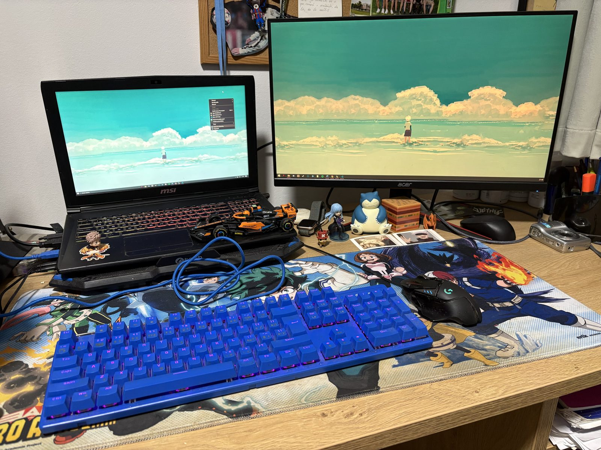

Ako pracujem
Môj pracovný stôl
Toto je môj pracovný stôl, kde pracujem. Prejdi myšou na označené miesta a zistíš niečo viac.

Fotografia: vlastná, autor Samuel Piteľ.
Samuel Piteľ
Študent aplikovanej informatiky, mám rád keď ráno nezvoní budík
Toto je môj pracovný stôl, kde pracujem. Prejdi myšou na označené miesta a zistíš niečo viac.

Fotografia: vlastná, autor Samuel Piteľ.